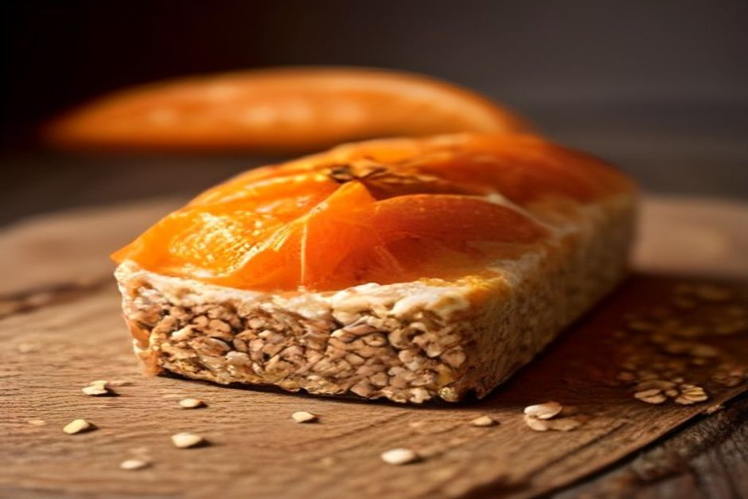
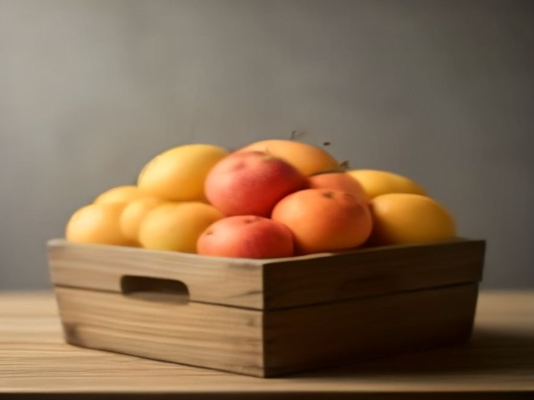
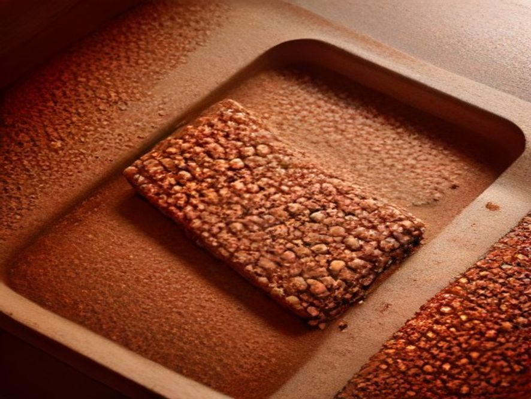
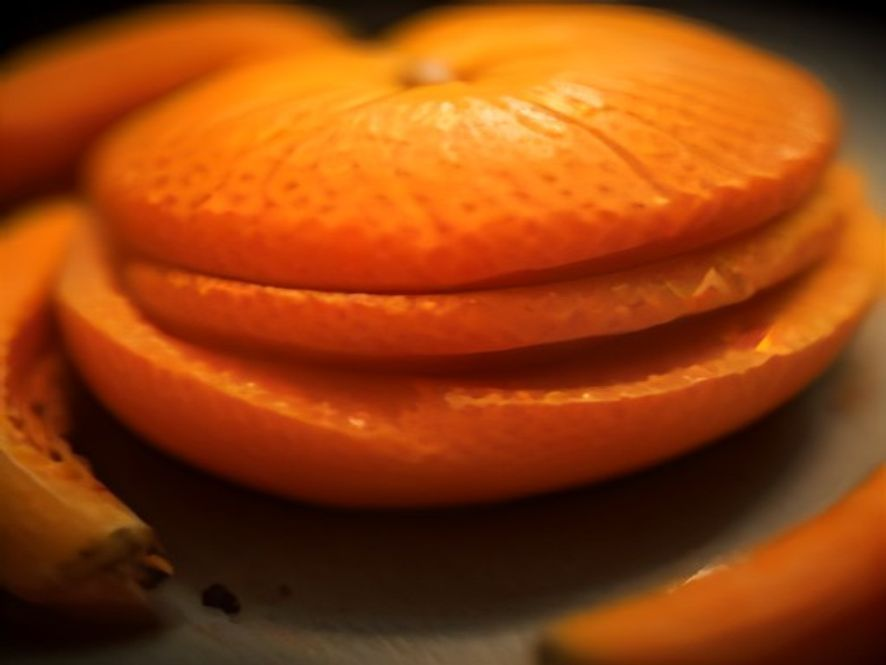
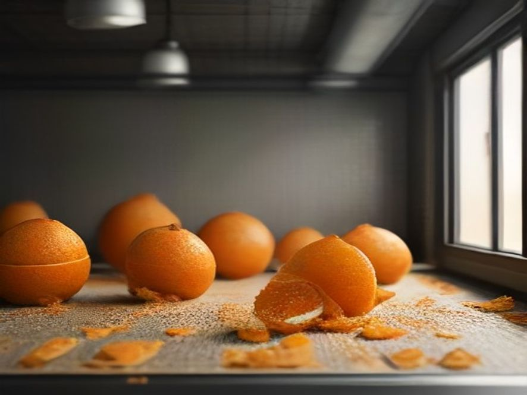
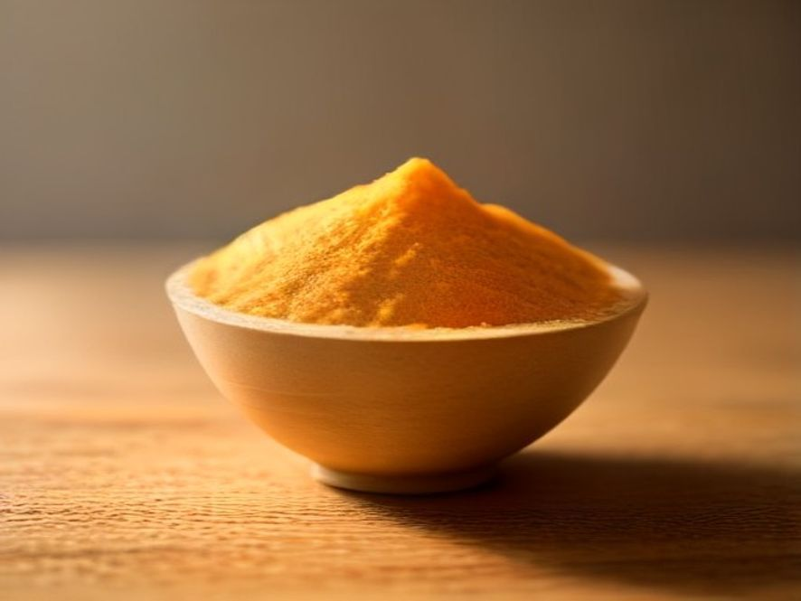
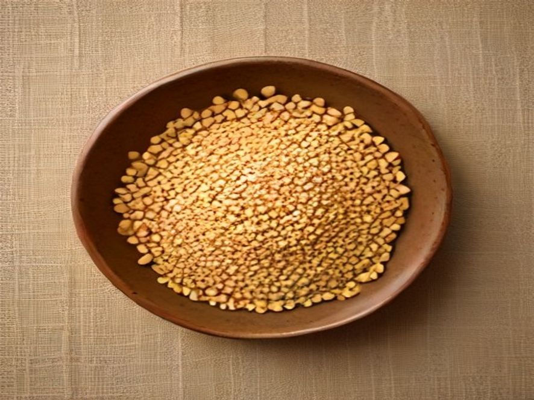
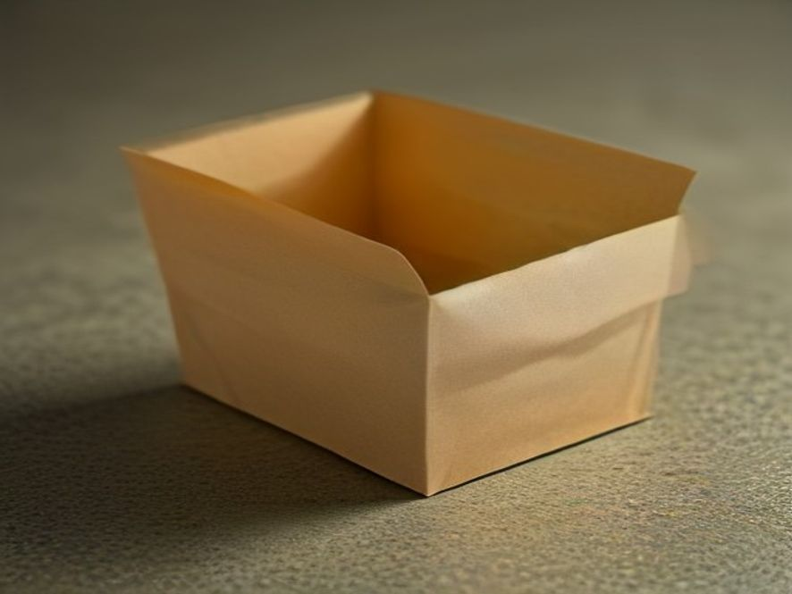
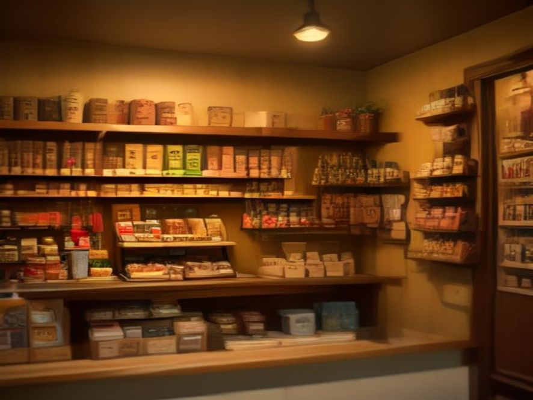

Una barrita de cereal hecha con la parte de la fruta que hoy termina en la basura: cáscara, pulpa y fruta fea que nadie compra pero que todavía se puede comer.
La idea en una página
Cuando una fábrica exprime naranjas, se lleva el jugo y descarta cáscara y pulpa. Cuando una verdulería recibe fruta chica, marcada o de forma rara, la aparta aunque esté perfecta por dentro. ECOBITE toma esos dos flujos, los seca, los muele y los convierte en la base de una barrita de cereal.
Cada barrita pesa 50 g pero moviliza cerca de 90 g de material fresco descartado, porque la cáscara pierde alrededor del 80 % de su peso al secarse. El cálculo completo está en el capítulo 5.
Secar, moler, mezclar y prensar son procesos que existen hace décadas. Lo que ECOBITE propone no es una tecnología inédita sino una combinación: usar un residuo industrial constante y barato como ingrediente principal de un producto que la gente quiera comprar por sabor y precio, no por lástima.
La apuesta es que el descarte deje de ser un costo de disposición para la fábrica de jugo y pase a ser un insumo con valor.
No declara vida útil, no promete un precio de góndola y no afirma valores nutricionales exactos. Todo eso exige ensayos sobre el producto terminado y precios reales de compra.
Lo que sí hace es dejar por escrito el proceso, la formulación tentativa, los números que se pueden estimar con honestidad y —sobre todo— la lista de lo que falta medir antes de vender la primera caja.
Contenido
Una naranja no aparece sola en la góndola. Antes hubo tierra ocupada durante años, agua de riego, fertilizante, combustible del tractor, mano de obra en la cosecha, cajones, camiones, frío y electricidad. Todo eso ya se gastó cuando la fruta llega a destino.
Si después la mitad de esa naranja termina en un contenedor, no se desperdicia solamente la fruta: se desperdicia todo el gasto que hizo falta para producirla. Ese es el punto que suele pasarse por alto. El residuo no es solo materia orgánica, es energía y trabajo ya invertidos.
Y hay un segundo costo, del otro lado: los restos orgánicos acumulados son un problema para quien los genera. Hay que juntarlos, guardarlos, transportarlos y disponerlos, y mientras tanto se descomponen.
ECOBITE apunta a ese punto exacto de la cadena: el momento en que algo perfectamente comestible se reclasifica como basura.

Dos flujos distintos, un mismo destino
Cáscara, bagazo y pulpa que quedan después de exprimir. Es un flujo constante, concentrado y previsible: sale todos los días del mismo lugar y en volumen conocido. Es el mejor insumo posible para planificar producción.
Fruta entera rechazada por calibre, forma o manchas superficiales. Es un flujo irregular y disperso, repartido entre muchos proveedores chicos. Aporta azúcar y sabor, pero no se puede depender solo de él.
El residuo de una fábrica de jugo tiene una ventaja que ningún cultivo nuevo tiene: ya existe, ya está pago y hoy le cuesta plata a alguien sacarlo de encima.
Una barrita compacta de 50 gramos, de textura densa y masticable, con trozos visibles de fruta y semillas. Se come sin cubiertos, no necesita frío y entra en un bolsillo.

El competidor real no es otra barrita "saludable" cara: es el snack de kiosco de precio bajo. Si ECOBITE sale al doble, el argumento ambiental no alcanza.
Por eso el objetivo de costo manda sobre todo lo demás, y por eso la formulación se apoya en insumos accesibles —avena, harina de garbanzo, maní— y no en proteínas aisladas o superalimentos importados.
Promesa de producto
Dulzor que viene de la fruta, no del azúcar agregado. Sabor cítrico y tostado.
Ingrediente principal de costo casi nulo en origen. Precio de kiosco, no de dietética.
Cada unidad rescata material que hoy se descarta, y lo dice con un número verificable.
| Insumo | Proveedor típico | Condición para aceptarlo |
|---|---|---|
| Cáscara y pulpa cítrica | Fábrica de jugo, jugueria grande | Recolección el mismo día del exprimido, en recipiente limpio y cerrado. Sin contacto con residuos no alimentarios. |
| Fruta de descarte | Verdulería, productor, mercado concentrador | Defecto estético o de calibre únicamente. Se rechaza cualquier unidad con moho, fermentación o daño que llegue a la pulpa. |
| Avena arrollada | Molino / distribuidor | Compra convencional, con certificado de análisis del proveedor. |
| Harina de garbanzo | Molino / distribuidor | Aporta la proteína. Compra convencional. |
| Maní y semillas | Sector manisero (Córdoba), distribuidor | Exigir control de aflatoxinas por lote. Es el riesgo sanitario más serio de la formulación. |

No se usa fruta podrida, fermentada ni con moho. El insumo es descarte comercial, no basura. Un lote dudoso se rechaza entero: el ahorro de aceptarlo nunca compensa el riesgo.
La cáscara húmeda empieza a fermentar en pocas horas a temperatura ambiente. Entre que sale de la fábrica de jugo y entra al secadero no puede pasar mucho tiempo, y eso condiciona dónde se instala la planta mucho más que el precio del insumo.
Dos cuidados propios de la cáscara
Lo que se aplica al cultivo queda sobre todo en la cáscara, y al secarla el peso baja pero el residuo no: se concentra. Hay que lavar con agua potable, pedir análisis al proveedor y evaluar fruta de manejo controlado.
El albedo —la parte blanca— es amargo. Sin un blanqueado o un lavado previo, la barrita sale desagradable. Es un problema de sabor, no de seguridad, pero define si el producto se vuelve a comprar.


Evaporar agua es caro. Sacarla exprimiendo, no. Cada gramo de agua que se retira con una prensa mecánica es un gramo que el secadero no tiene que evaporar, y la diferencia de energía entre un método y el otro es de más de un orden de magnitud. Poner el prensado antes del secado es la decisión de proceso con más impacto sobre el costo final. El número está desarrollado en el capítulo 10.
| Ingrediente | g | % |
|---|---|---|
| Harina de cáscara y pulpa | 15,0 | 30 |
| Avena arrollada | 12,5 | 25 |
| Puré de fruta de descarte | 8,0 | 16 |
| Harina de garbanzo | 6,0 | 12 |
| Maní tostado | 5,0 | 10 |
| Semillas (girasol, chía) | 3,5 | 7 |
| Total | 50,0 | 100 |
Punto de partida para ensayar, no fórmula cerrada. El porcentaje de harina de fruta es la variable a ajustar: sube la fibra y el aprovechamiento, pero también el amargor y la dureza.

Balance de materia · cuánto descarte hay detrás de una barrita
| Paso | Cálculo | Resultado |
|---|---|---|
| Harina de fruta por barrita | 30 % de 50 g | 15 g |
| Rendimiento al secar | La cáscara cítrica es ~80 % agua | ≈ 18 % |
| Subproducto fresco necesario | 15 g ÷ 0,18 | ≈ 83 g |
| Fruta fresca para el puré | 8 g de puré | ≈ 10 g |
| Descarte movilizado por barrita | 83 g + 10 g | ≈ 93 g |
Rendimiento estimado a partir del agua típica de la cáscara cítrica; hay que medirlo sobre el material real de cada proveedor, porque varía con la especie y la época.
50 g de producto terminado nacen de unos 93 g de material descartado. Esa relación —cerca de 1,9 a 1— es el argumento ambiental del producto, y conviene comunicarla en fresco, que es como el residuo existe de verdad.
1.000 kg de cáscara fresca → ≈ 180 kg de harina de fruta → ≈ 12.000 barritas → ≈ 600 kg de producto terminado. Una fábrica de jugo mediana puede sostener esa cifra en pocos días.
| Nutriente | Rango | /100 g |
|---|---|---|
| Valor energético | 170–210 kcal | ≈ 380 |
| Proteínas | 6–8 g | ≈ 14 |
| Carbohidratos | 25–30 g | ≈ 55 |
| · de los cuales azúcares | 6–10 g | ≈ 16 |
| Grasas totales | 4–7 g | ≈ 11 |
| · saturadas | ≈ 1 g | ≈ 2 |
| Fibra alimentaria | 5–8 g | ≈ 13 |
| Sodio | bajo | ≈ 80 mg |
Valores calculados a partir de la formulación, no medidos. Para rotular hace falta análisis bromatológico del producto terminado.
La fibra es el rasgo distintivo y viene sobre todo de la cáscara: es la parte de la fruta que más fibra tiene y justamente la que se suele tirar. La avena aporta el resto.
La proteína sale de combinar harina de garbanzo con avena, maní y semillas. Ninguna de las cuatro alcanza sola, pero juntas se complementan razonablemente bien.
El dulzor es intrínseco de la fruta: no hay azúcar agregado, y eso tiene una consecuencia regulatoria concreta.
Con los valores medios (27,5 g de carbohidratos, 7 g de proteína y 5,5 g de grasa) el cálculo energético da ≈ 188 kcal, dentro del rango declarado. La estimación cierra.
Etiquetado frontal · Ley 27.642
| Nutriente | Umbral de referencia (sólidos) | ECOBITE estimado | Sello |
|---|---|---|---|
| Valor energético | ≥ 275 kcal / 100 g | ≈ 380 | Exceso en calorías |
| Azúcares añadidos | ≥ 10 % del valor energético | 0 % | Sin sello |
| Grasas saturadas | ≥ 10 % del valor energético | ≈ 5 % | Sin sello |
| Grasas totales | ≥ 30 % del valor energético | ≈ 26 % | Sin sello |
| Sodio | ≥ 1 mg / kcal | ≈ 0,2 | Sin sello |
Umbrales citados como referencia de trabajo: verificarlos contra el texto vigente antes de diseñar el envase.
Cualquier barrita densa supera el umbral calórico por 100 g, así que el sello de calorías hay que darlo por hecho. Los otros cuatro dependen de la formulación, y con la propuesta actual se evitan. El margen más ajustado es el de grasas totales: subir el maní del 10 % al 14 % probablemente cruce el 30 % y agregue un segundo octógono. El maní es el tope duro de la fórmula.
No hay un ingrediente mágico que reemplace al conservante. Lo que hay es una suma de obstáculos: cada uno por separado no alcanza, pero juntos hacen que a un microorganismo le resulte muy difícil crecer.
| Barrera | Qué hace | Objetivo de diseño |
|---|---|---|
| Agua disponible | Sin agua libre, los microorganismos no se multiplican, aunque el alimento la contenga ligada. | Actividad acuosa por debajo de ≈ 0,60. Es la barrera principal y la razón de ser del secado. |
| Calor del proceso | Reduce la carga microbiana que traía la materia prima. | Tratamiento térmico en la etapa de formado, a definir por ensayo. |
| Acidez de la fruta | El pH bajo del cítrico juega en contra del desarrollo microbiano. | Aporte natural de la formulación; se mide, no se agrega. |
| Envase | Impide que el producto vuelva a tomar humedad del aire y frena la oxidación de las grasas. | Envoltura con barrera a humedad y oxígeno, sellada. |
Con la actividad acuosa controlada, el problema deja de ser el moho y pasa a ser el enranciamiento: el maní y las semillas tienen grasas que se oxidan con el oxígeno y la luz. Una barrita puede estar perfectamente segura y aun así tener gusto a rancio.
Por eso el envase importa tanto como el secado, y por eso la prueba de vida útil tiene que evaluar sabor, no solo recuento microbiano.
Poner "vida útil: 6 meses" en el envase sin haberlo ensayado no es un atajo, es una declaración falsa. La vida útil se determina guardando el producto real en las condiciones reales y midiendo en el tiempo.
Hasta tener esos datos, el número no existe. Se puede acelerar el ensayo con temperatura y humedad controladas, pero hay que hacerlo igual.
"Sin conservantes" no es una promesa de marketing: es una restricción de diseño que obliga a secar bien, envasar bien y demostrarlo con ensayos.

Un envoltorio compostable es el objetivo, pero solo sirve si mantiene fuera la humedad y el oxígeno. Un envase muy ecológico que deja entrar aire arruina el producto, y un producto arruinado es residuo: exactamente lo que ECOBITE quiere evitar.
El orden correcto es: primero se define la barrera que el producto necesita, después se busca el material más sostenible que la cumpla.
La caja exterior, en cambio, sí puede ser cartón reciclable desde el día uno: no cumple función de barrera.
Maqueta. Codifica el lote
AR-2026-0417.
Al escanearlo, la persona ve de dónde salió lo que está comiendo y cuánto material se recuperó. No es un adorno: es la prueba del argumento del producto.
El número tiene que salir del registro real de cada lote, no de una plantilla fija. Si se imprime siempre la misma cifra, deja de ser trazabilidad y pasa a ser decoración.
Cadena
El primer tramo es el crítico: la cáscara húmeda no aguanta un viaje largo. Secar cerca del origen convierte un insumo perecedero y pesado en una harina estable y liviana, que ya sí se puede mandar a cualquier lado.

Transportar cáscara mojada cientos de kilómetros es mover agua en camión. La forma de escalar es replicar módulos de secado cerca de cada zona productora —el cinturón citrícola, la zona manisera— y concentrar después solo la harina, que pesa cinco veces menos y no se echa a perder en el camino.
Es tentador concluir que si la materia prima principal no se paga, el producto sale casi gratis. El balance de energía dice otra cosa, y conviene enfrentarlo ahora y no después de comprar el equipamiento.
El número que hay que mirar
| Concepto | Cálculo | Por barrita |
|---|---|---|
| Agua a evaporar | 83 g de fresco − 15 g de harina | ≈ 68 g |
| Energía teórica mínima | 68 g × 2,26 kJ/g (calor de vaporización) | ≈ 154 kJ |
| Equivalente eléctrico ideal | 154 kJ ÷ 3.600 | ≈ 0,043 kWh |
| Consumo real esperable | Secadero con 30–50 % de eficiencia | 0,09–0,14 kWh |
Estimación de orden de magnitud a partir del calor latente de vaporización del agua; sirve para dimensionar, no para presupuestar.
El secado puede terminar costando más que todos los ingredientes comprados juntos. Es el rubro que decide si ECOBITE es viable, y las tres palancas para bajarlo son: prensar antes de secar, aprovechar calor residual de la propia fábrica de jugo y no mover agua en camión.
No al revés. Primero se mira cuánto sale hoy un snack comparable en el kiosco —ese es el techo—, después se calcula el costo unitario real con los seis rubros de arriba, y recién ahí se ve si queda margen. Si no queda, se ajusta la fórmula o la escala; lo que no se puede es fijar el precio por lo que uno quisiera cobrar.
La fruta es la misma y el agua de riego ya se usó. Lo único que cambia es que una parte que terminaba en el contenedor ahora vuelve a la cadena alimentaria. Todo lo que se invirtió en producir esa naranja rinde para dos productos en vez de uno.
Hay además un efecto en el otro extremo: menos volumen de orgánico acumulado para juntar, transportar y disponer.
Aprovechar el residuo no es gratis en términos ambientales: secar consume energía, y si esa energía es de origen fósil una parte del beneficio se pierde. Afirmar que ECOBITE "reduce la huella" exige compararlo contra lo que hoy se hace con esa cáscara —que muchas veces es compostaje o alimentación animal, no un vertedero—. Esa comparación se hace con un análisis de ciclo de vida, y hasta tenerlo lo correcto es decir qué se aprovecha, no cuánto CO2 se ahorra.
Argentina tiene producción citrícola de escala con industria de jugo asociada —que es justamente donde se concentra el subproducto— y una cuenca manisera consolidada en Córdoba. La avena y las frutas de estación se consiguen sin importar nada.
Comprar descarte a productores y verdulerías del lugar agrega un beneficio que no es ambiental sino económico: le da un ingreso a fruta que hoy no genera ninguno.
Que la cáscara sea comestible no la habilita automáticamente como insumo industrial. Hay que poder demostrar que se recibió en condiciones sanitarias adecuadas, con trazabilidad hacia el proveedor y control documentado. La conversación con la autoridad bromatológica conviene tenerla al principio del proyecto, no cuando el producto ya está formulado.
Un proyecto se vuelve creíble cuando distingue lo que sabe de lo que supone. Esta es la lista de lo segundo, en el orden en que conviene resolverlo.
| # | Qué hay que medir | Cómo |
|---|---|---|
| 1 | Rendimiento real de secado | Pesar entrada y salida con cáscara de cada proveedor, en distintas épocas. Todo el balance de materia depende de este dato. |
| 2 | Amargor y aceptación | Panel de degustación sobre prototipos con y sin blanqueado, y a distintos porcentajes de harina de fruta. |
| 3 | Actividad acuosa y humedad | Medición sobre el producto terminado; es la que sostiene la decisión de no usar conservantes. |
| 4 | Vida útil | Ensayo en tiempo real y acelerado, evaluando microbiología y enranciamiento hasta que aparezca el primer defecto. |
| 5 | Composición real | Análisis bromatológico del producto terminado. Sin esto no se puede rotular ni confirmar los octógonos. |
| 6 | Inocuidad de la cáscara | Residuos de agroquímicos y control de aflatoxinas en el maní, por lote y por proveedor. |
| 7 | Consumo energético del secado | Medir kWh reales en el equipo elegido, con y sin prensado previo. Define la viabilidad económica. |
| 8 | Costo unitario | Con precios de compra reales y la escala de producción prevista, no con estimaciones. |
Los puntos 1 y 2 se pueden hacer en una cocina, con una balanza, un horno y diez personas probando. No hacen falta habilitaciones para aprender si la barrita se puede comer sin que amargue.
Dos cosas: que el amargor no se resuelva a un costo razonable, o que el secado consuma tanta energía que el producto no pueda competir en precio. Conviene testear ambas antes que cualquier otra cosa.
En conclusión
Secar, moler, mezclar y envasar son procesos conocidos desde hace décadas. Lo que ECOBITE propone es apuntarlos a un material que hoy se descarta y sacar de ahí algo que la gente quiera comprar por gusto y por precio, no por obligación moral.
Lo que sería
Lo que hay que probar
Lo innovador no es el proceso.
Es el destino que le damos a lo que sobra.
ECOBITE · Dossier de producto v1 · Argentina 2026
Documento de concepto. Los valores nutricionales, de vida útil y de costo son
estimaciones sujetas a ensayo.